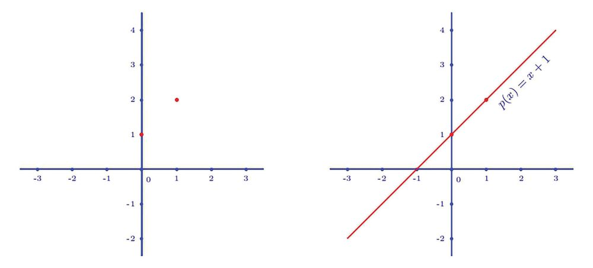
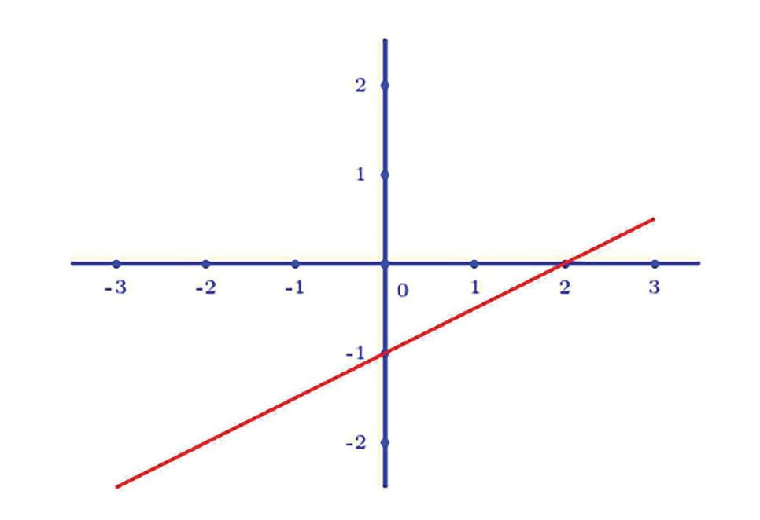
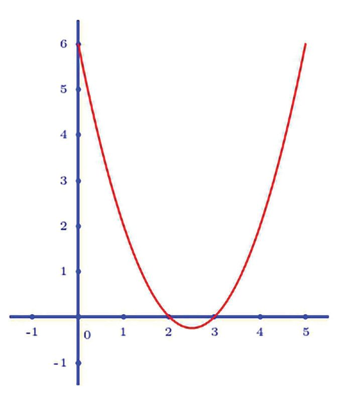

ബഹുപദചിത്രങ്ങൾ
ഒന്നാംകൃതി ബഹുപദങ്ങൾ
അളവുകൾ തമ്മിലുള്ള ബന്ധങ്ങളെ ബീജഗണിത സമവാക്യങ്ങളായി എഴുതുന്ന രീതി ആറാം
ക്ലാസ് മുതൽ കണ്ടിട്ടുണ്ടല്ലലോ. ഇവയെ കേവലസംഖ്യകളിന്മേൽ ചെയ്യുന്ന ക്രിയകളായി ബഹുപദ
ങ്ങൾ എന്ന പാഠത്തിൽ കണ്ടു. ഇങ്ങനെ നോോക്കുമ്പപോൾ, ഓരോോ ബഹുപദവും ഒരു നിശ്ചിത നിയ
മമനുസരിച്ച് സംഖ്യകളെ മാറ്റുകയാണ് ചെയ്യുന്നത്.
ഉദാഹരണമായി
p(x) = 2x + 1
എന്ന ഒന്നാംകൃതി ബഹുപദം എടുക്കാം. ഏതു സംഖ്യയെയും 2 കൊൊണ്ട് ഗുണിച്ച്, 1 കൂട്ടുകയാണ്
ഇവിടെ ചെയ്യുന്നത്. അപ്പപോൾ x ആയി 0, 1, 2, 3 എന്നീ സംഖ്യകൾ എടുത്താൽ p(x) ആയി 1, 3,
5, 7 എന്നീ സംഖ്യകൾ കിട്ടും (ഒറ്റസംഖ്യകളുടെ പൊൊതുരൂപം ഏഴാം ക്ലാസിൽ കണ്ടത് ഓർമ്മ വരു
ന്നുണ്ടടോ ?).
x മാറുന്നതനുസരിച്ച് p(x) മാറുന്നത് ഇങ്ങനെ ഒരു പട്ടികയായി കാണിക്കാം:
x
0
1
2
3
p(x)
1
3
5
7
അഞ്ചാം ക്ലാസിലെയും ആറാം ക്ലാസിലെയും സ്ഥിതിവിവരക്കണക്കുകളിൽ ചെയ്തതുപോോലെ ഈ
പട്ടികയെ ചിത്രമാക്കിയാലോോ ?
ആദ്യയം വിലങ്ങനെയുള്ള ഒരു വര വരച്ച്, അതിൽ ഒരേ അകലം ഇടവിട്ട് 0, 1, 2, 3 എന്നിങ്ങനെ
അടയാളപ്പെടുത്താം; ഇനി ഈ സ്ഥാനങ്ങളിൽ നിന്ന്, വിലങ്ങനെയുള്ള വരയിൽ എടുത്ത അകലം
തന്നെ ഉപയോോഗിച്ച്, p(0), p(1), p(2), p(3) എന്ന ഉയരങ്ങളിൽ ലംബം വരയ്കക്കകാം.
ഗണിതം സ്റ്റാൻഡേർഡ് - IX
x ആയി ന്യയൂനസംഖ്യകളും എടുക്കാമല്ലലോ. അപ്പപോൾ പട്ടിക ഇടത്തേയ്കക്കകും നീട്ടാം:
x
−3
−2
−1
0
1
2
3
p(x)
−5
−3
−1
1
3
5
7
ഈ സംഖ്യകളും ചിത്രത്തിൽ വരയ്ക്കുന്നതെങ്ങനെ ?
േരഖീയസംഖ്യകൾ എന്ന പാഠത്തിൽ ചെയ്തതുപോോലെ, വിലങ്ങനെയുള്ള വരയെ ഇടത്തേയ്ക്ക് നീട്ടി,
x ആയെടുത്ത ന്യയൂനസംഖ്യകൾ അടയാളപ്പെടുത്താം:
ഇനി ന്യയൂനസംഖ്യകളായ p(x) അടയാളപ്പെടുത്തുന്നതെങ്ങനെ ?
അധിസംഖ്യകളായ p(x) സൂചിപ്പിക്കാൻ ലംബങ്ങൾ വരച്ചത് മുകളിലേക്ക് ആയതുകൊൊണ്ട്, ന്യയൂന
ങ്ങളായ p(x) താഴോോട്ടു വരയ്കക്കകാം.
ഈ ലംബങ്ങളുടെ അറ്റങ്ങൾ മാത്രം നോോക്കൂ:
അവയെല്ലാം ഒരേ വരയിലാണോോ ? സ്കെയിൽ വച്ച് വരച്ചു നോോക്കൂ:
x ആയി മറ്റു സംഖ്യകൾ എടുത്താലും, p(x) എന്ന ഉയരത്തിൽ (അല്ലെങ്കിൽ താഴ്ചയിൽ) വരയ്ക്കുന്ന
ലംബത്തിന്റെ അറ്റം ഈ വരയിൽത്തന്നെ ആയിരിക്കുമോോ ?
ഉദാഹരണമായി x = 1 34 എന്നെടുത്താലോോ ?
1
3
3
p c1 4 m = c 2 # 1 4 m 1 4 2
വിലങ്ങനെയുള്ള വരയിൽ 1 34 അടയാളപ്പെടുത്തി, ലംബം വരച്ച്
ചുവന്ന വരയെ മുട്ടിക്കാം. ഈ ലംബത്തിന്റെ ഉയരം 4 12 തന്നെ
യാണോോ എന്നു പരിശോോധിക്കണം. അതു കാണാൻ ചിത്രത്തിന്റെ
ആവശ്യമുള്ള ഭാഗം മാത്രം, സംഖ്യകൾ തമ്മിലുള്ള അകലം കൂട്ടി,
വരച്ചത് നോോക്കൂ.
ചുവടെയുള്ള ചിത്രത്തിലെപ്പപോലെ ഒരു ലംബവും കൂടി വരച്ചാൽ ചിത്രത്തിന്റെ മുകൾഭാഗത്ത്
(ചുവന്ന നിറത്തിൽ കാണിച്ചിരിക്കുന്ന) രണ്ടു മട്ടത്രികോോണങ്ങൾ കിട്ടുമല്ലലോ
ഈ ത്രികോോണങ്ങൾക്ക് ഒരേ കോോണുകളാണ് (എന്തുകൊൊണ്ട് ?). അതിനാൽ, ഇവയുടെ വശങ്ങ
ളുടെ മാറ്റം ഒരേ തോോതിലാണ് (സദൃശത്രികോോണങ്ങൾ എന്ന പാഠം). രണ്ടു ത്രികോോണങ്ങളുടെയും
ചില വശങ്ങളുടെ നീളം എളുപ്പം കാണാം:
വലിയ ത്രികോോണത്തിന്റെ താഴത്തെ വശത്തിന്റെ 34 ഭാഗമാണ്, ചെറിയ ത്രികോോണത്തിന്റെ താഴത്തെ
വശം. അപ്പപോൾ ചെറിയ ത്രികോോണത്തിന്റെ കുത്തനെയുള്ള വശവും, വലിയ ത്രികോോണത്തിന്റെ
കുത്തനെയുള്ള വശത്തിന്റെ 34 ഭാഗം തന്നെ ആകണമല്ലലോ; അതായത് ചെറിയ ത്രികോോണത്തിന്റെ
കുത്തനെയുള്ള വശത്തിന്റെ നീളം 2 × 34 = 1 12
അപ്പപോൾ, 1 34 എന്ന സ്ഥാനത്തുനിന്ന് ചുവന്ന വരയിലേക്കുള്ള ലംബത്തിന്റെ നീളം 3 1 12 4 12 .
തിരിച്ചുപറഞ്ഞാൽ താഴത്തെ വരയിലെ x = 1 34 എന്ന സ്ഥാനത്തുനിന്ന് p c1 34 m = 4 12 എന്ന
ഉയരത്തിൽ (അല്ലെങ്കിൽ താഴ്ചയിൽ) വരയ്ക്കുന്ന ലംബത്തിന്റെ അറ്റം ചുവന്ന വരയിൽത്ത
ന്നെയാണ്.
ഇതുപോോലെ, x ആയി ഏതു സംഖ്യ (ഭിന്നകമോോ, അഭി
ന്നകമോോ) എടുത്താലും, വിലങ്ങനെയുള്ള വരയിൽ ആ
സ്ഥാനത്തുനിന്ന് p(x) ഉയരത്തിൽ (അല്ലെങ്കിൽ താഴ്ച
യിൽ) വരയ്ക്കുന്ന ലംബത്തിന്റെ അറ്റം ഈ ചുവന്ന
വരയിൽത്തന്നെ ആയിരിക്കും എന്നു കാണാം.
ഈ വരയെ p(x) = 2x + 1 എന്ന ബഹുപദത്തിന്റെ ചിത്രരൂപം
(graph) എന്നാണ് പറയുന്നത്. സാധാരണയായി ഇങ്ങനെ
ചിത്രരൂപം വരയ്ക്കുമ്പപോൾ ലംബങ്ങൾ വരയ്ക്കാതെ അവയുടെ
അറ്റങ്ങൾ മാത്രം അടയാളപ്പെടുത്തി അവ ചേർത്തു വരയ്ക്കുക
യാണ് പതിവ്. ഉയരങ്ങൾ മനസ്സിലാക്കാൻ, വിലങ്ങനെ സംഖ്യ
കൾ അടയാളപ്പെടുത്തിയ വരയിൽ 0 എന്ന സ്ഥാനത്തിലൂടെ
ലംബം വരച്ച്, അതിലും അതേ അകലം ഇടവിട്ട് സംഖ്യകൾ
അടയാളപ്പെടുത്തുകയും ചെയ്യും.
ഒരു ബഹുപദത്തിന്റെ ചിത്രരൂപം ജിയോോജിബ്രയിൽ വര
യ്ക്കാൻ Input Bar ഉപയോോഗിക്കാം. p(x) = 2x + 1 എന്നതിന്റെ
ചിത്രരൂപം വരയ്ക്കാൻ Input Bar ൽ p(x) = 2x + 1 എന്ന് ടൈ
പ്പുചെയ്ത് Enter നൽകിയാൽ മതി (2x + 1 എന്ന് മാത്രം ടൈപ്പു
ചെയ്താലും ചിത്രം കിട്ടും. എന്നാൽ ബഹുപദത്തിന്റെ പേര് p(x)
എന്ന് കിട്ടണമെന്നില്ല).
213
Page 70
Figure fig_ch06_p070_01 (Page 70)

Figure fig_ch06_p070_02 (Page 70)

Figure fig_ch06_p070_03 (Page 70)
ഗണിതം സ്റ്റാൻഡേർഡ് - IX
ഇതേ രീതിയിൽത്തന്നെ, ഏത് ഒന്നാംകൃതി ബഹുപദത്തിന്റെയും ചിത്രരൂപം നേർവരയാണെന്നു
കാണാം.
ഒരു വര വരയ്ക്കാൻ രണ്ടു ബിന്ദുക്കൾ മതിയല്ലലോ. അപ്പപോൾ ഒരു ഒന്നാംകൃതി ബഹുപദത്തിന്റെ
ചിത്രരൂപം വരയ്ക്കാൻ, x ആയി ഏതെങ്കിലും രണ്ടു സംഖ്യകളെടുത്ത്, ബഹുപദത്തിൽനിന്നു കിട്ടുന്ന
സംഖ്യകൾ കണക്കാക്കിയാൽ മതി.
ഉദാഹരണമായി,
p(x) = x + 1
എന്ന ബഹുപദം നോോക്കുക.
x ആയി 0, 1 എന്നീ സംഖ്യകളെടുക്കാം:
x
0
1
p(x)
1
2
ഇനി ചിത്രരൂപം വരയ്ക്കാമല്ലലോ ?
മറിച്ച്, ചിത്രരൂപത്തിൽനിന്ന് ബഹുപദം കണക്കാക്കാനും എളുപ്പമാണ്. ഉദാഹരണമായി, ഈ
ചിത്രം നോോക്കുക:
ഇതിന്റെ ബഹുപദം p(x) എന്നെടുക്കാം. അപ്പപോൾ
ജിയോോജിബ്രയിൽ Increment : 0.1 ആയി a, b
p(0) = −1 ഉം p(2) = 0 എന്നും ചിത്രത്തിൽ നിന്നു
എന്നിങ്ങനെ രണ്ട് സ്ലൈഡറുകൾ നിർമ്മി
കാണാമല്ലലോ ?
ക്കുക. p(x) = ax + b എന്ന് Input bar ൽ ടൈപ്പു
ചെയ്ത് ബഹുപദത്തിന്റെ ചിത്രരൂപം വരയ്ക്കുക. b
ഇനി p(x) ഒന്നാംകൃതി ബഹുപദം ആയതിനാൽ
എന്ന സ്ലൈഡർ മാത്രം മാറ്റിനോോക്കൂ. വരയ്ക്ക് എന്താണ്
p(x) = ax + b
സംഭവിക്കുന്നത് a മാത്രം മാറ്റിയാലോോ ? p(0) = −1
എന്ന രൂപത്തിൽ ആയിരിക്കും (ബഹുപദങ്ങൾ ഉം p(2) = 5 ഉം ആയാൽ p(x) എന്തായിരിക്കുമെന്ന്
എന്ന പാഠം). ഇതിലെ a, b എന്നീ സംഖ്യകളാണ് ഇതുപയോോഗിച്ച് കണക്കാക്കാൻ കഴിയുമോോ ? ശ്രമിച്ചു
കണ്ടുപിടിക്കേണ്ടത്.
നോോക്കൂ. p(1) = 2, p(2) = 6 ആയാലോോ ?
അതിന് p(0) = −1 എന്നും p(2) = 0 എന്നും ചിത്ര
ത്തിൽനിന്നു കിട്ടിയ കാര്യങ്ങൾ ഉപയോോഗിക്കാം.
p(x) = ax + b ആയതിനാൽ
p(0) = (a × 0) + b = b
p(0) = −1 ആയതിനാൽ, ഇതിൽനിന്ന്
b = −1
എന്നു കിട്ടും.
ഇതുപയോോഗിച്ച്
p(2) = (a × 2) + b = 2a + b = 2a − 1
എന്നു കാണാം. ചിത്രത്തിൽ നിന്ന് p(2) = 0 എന്നും കിട്ടിയിട്ടുണ്ട്. അപ്പപോൾ
2a − 1 = 0
എന്നും ഇതിൽനിന്ന്
1
a= 2
എന്നും കിട്ടും.
അപ്പപോൾ മുകളിൽക്കണ്ട വരയുടെ ബഹുപദരൂപം
1
p(x) = 2 x − 1
അഥവാ, p(x) = 12 x − 1 എന്ന ബഹുപദത്തിന്റെ ചിത്രരൂപമാണ് ഈ വര.
ഗണിതം സ്റ്റാൻഡേർഡ് - IX
(1) ചുവടെയുള്ള ബഹുപദങ്ങളുടെ ചിത്രരൂപം വരയ്ക്കുക
(i)
p(x) = 2x − 1
(iv) p(x) = x
(ii) p(x) = x − 1
(iii) p(x) = 1 − x
(v) p(x) = −x
(2) ചുവടെയുള്ള വരകളുടെ ബഹുപദരൂപം കണ്ടുപിടിക്കുക:
രണ്ടാംകൃതി ബഹുപദങ്ങൾ
ഇനി രണ്ടാംകൃതി ബഹുപദങ്ങളുടെ ചിത്രരൂപം നോോക്കാം. ഏറ്റവും ലളിതമായ രണ്ടാംകൃതി
ബഹുപദം ഏതാണ് ?
p(x) = x2
ഇതിന്റെ ചിത്രരൂപം വരയ്ക്കാൻ ആദ്യയം ഒരു ചെറിയ
പട്ടിക ഉണ്ടാക്കാം:
x
−3
−2
−1
0
1
2
3
p(x)
9
4
1
0
1
4
9
ഇനി നേരത്തെ ചെയ്തതുപോോലെ ലംബമായി രണ്ടു
വരകൾ വരച്ച്, ഒരേ അകലത്തിൽ സംഖ്യകൾ അട
യാളപ്പെടുത്താം; തുടർന്ന് വിലങ്ങനെയുള്ള വരയിൽ
x ആയി എടുക്കുന്ന സംഖ്യകളിൽനിന്ന് p(x) എന്ന
ഉയരത്തിൽ വരയ്ക്കുന്ന ലംബങ്ങളുടെ മുകളറ്റങ്ങൾ അട
യാളപ്പെടുത്താം:
ഇത്രയും ബിന്ദുക്കൾ മാത്രം ഉപയോോഗിച്ച് കൃത്യമായ ചിത്രം വരയ്ക്കാൻ കഴിയില്ല. ഇവയുടെ ഇടയിലു
ള്ള ചില ബിന്ദുക്കൾ കിട്ടാൻ എന്താണു വഴി ?
x = 0.5 എന്നെടുത്താൽ p(0.5) = 0.25 എന്നാണ് കിട്ടുക. ഈ ഉയരം സ്കെയിൽ വച്ച് വരയ്ക്കാൻ
കഴിയില്ലല്ലലോ ?
ഈ ചിത്രം വരയ്ക്കാൻ ജിയോോജിബ്ര ഉപയോോഗിക്കാം.
ജിയോോജിബ്ര തുറന്നാൽ വിലങ്ങനെയും കുത്തനെയും ഒരേ അകലത്തിൽ സംഖ്യകൾ അടയാള
പ്പെടുത്തിയ വരകൾ കാണം. ഇനി Input Bar ൽ (0.5, 0.25) എന്നു കൊൊടുത്താൽ, വിലങ്ങനെ
യുള്ള അകലം 0.5 ഉം, കുത്തനെയുള്ള ഉയരം 0.25 ഉം ആയ ബിന്ദു കാണാം:
ഇങ്ങനെ നമുക്കാവശ്യയമായ ബിന്ദുക്കളുടെയെല്ലാം അകലവും ഉയരവും വെവ്വേറെ കണക്കാക്കി,
ഓരോോന്നായി അടയാളപ്പെടുത്തുന്നതിനു പകരം, കുറേ ബിന്ദുക്കൾ ഒന്നിച്ച് അടയാളപ്പെടുത്താനും
മാർഗമുണ്ട്. Input Bar ൽ ഇങ്ങനെ ടൈപ്പ് ചെയ്യുക:
Sequence [(t, t^2), t, −3, 3, 0.5]
(−3 മുതൽ 3 വരെ 0.5 ഇടവിട്ടുള്ള സംഖ്യയകൾ t ആയെടുത്ത്, t അകലത്തിൽ, t2 ഉയരത്തിൽ
ബിന്ദുക്കൾ അടയാളപ്പെടുത്തുക എന്നതാണ് ഈ നിർദേശത്തിന്റെ അർഥം). അപ്പോോൾ ഇങ്ങനെ
കുറേക്കൂടി ബിന്ദുക്കൾ കിട്ടാൻ, t ആയി എടുക്കുന്ന സംഖ്യകൾ തമ്മിലുള്ള വ്യത്യയാസം 0.5 നു
പകരം, 0.1 ആക്കാം:
ജിയോോജിബ്രയിൽ Min = 0, Max = 1,
Increment : 0.01 ആകത്തക്കവിധം ഒരു
സ്ലൈഡർ a നിർമ്മിക്കുക. Input bar ൽ
Sequence [(t, t^2), t, −3, 3, a] എന്ന് ടൈപ്പുചെ
യ്യുക. p(x) = x2 എന്ന ബഹുപദത്തിന്റെ ചിത്രത്തി
ലെ ബിന്ദുക്കൾ കിട്ടും. സ്ലൈഡർ മാറ്റിനോോക്കൂ.
a യുടെ വില കുറയുന്നതിനനുസരിച്ച് കൂടുതൽ
അടുത്തടുത്ത ബിന്ദുക്കൾ കിട്ടും.
ഇപ്പപോൾ ചിത്രത്തിന്റെ ഏകദേശ രൂപം കിട്ടിയില്ലേ ?
ഇനി വിടവുകളൊൊന്നും ഇല്ലാതെ ഈ വക്രം (cur ve) വരയ്ക്കാൻ, Input Bar ൽ x^2 എന്നു ടൈപ്പ്
ചെയ്താൽ മതി.
ജിയോോജിബ്രയിൽ Increment : 0.1 ആകത്തക്ക
വിധം ഒരു സ്ലൈഡർ a നിർമ്മിക്കുക. Input Bar
ൽ (a, a ^ 2) എന്ന് ടൈപ്പുചെയ്യുമ്പപോൾ ഒരു
ബിന്ദു ലഭിക്കും. സ്ലൈഡർ മാറുന്നതിനനുസരിച്ച് ഈ
ബിന്ദു ചലിക്കുന്നത് കാണാം. ഇത് സഞ്ചരിക്കുന്ന
പാത ഏതാണ് ? അത് കിട്ടാൻ ബിന്ദുവിൽ Right click
ചെയ്ത് Trace on നൽകിയാൽ മതി. Increment : 0.1 എന്ന
തിനു പകരം 0.01 എന്നനോ മറ്ററോ നൽകിയാൽ കുറച്ചു
കൂടി അടുത്തടുത്ത് ബിന്ദുക്കൾ കിട്ടും (സ്ലൈഡ
റിൽ Right click ചെയ്ത് Object properties → Slider
→ Increment എന്ന രീതിയിൽ Increment മാറ്റാൻ
കഴിയും). Locus ടൂൾ ഉപയോോഗിച്ച് സ്ലൈഡറിലും
ബിന്ദുവിലും ക്ലിക്കുചെയ്താലും ബിന്ദുവിന്റെ സഞ്ചാര
പാത കിട്ടും.
ഇതുപോോലെ Input Bar-ൽ വേറെ രണ്ടാംകൃതി ബഹുപദങ്ങൾ ടൈപ്പ് ചെയ്തു നോോക്കൂ:
ഉദാഹരണമായി, (1/2)x^2 − 3x + 1 എന്നും −2x^2 + 3x + 1 എന്നും കൊൊടുത്താൽ കിട്ടുന്ന
ചിത്രങ്ങൾ അടുത്തപേജിൽ കാണാം.
വ്യത്യസ്ത രണ്ടാംകൃതി ബഹുപദങ്ങളുടെ ചിത്ര രൂപങ്ങൾ നോോക്കിയാൽ, സ്ഥാനം മാറുക, വിരിവ്
കൂടുകയോോ കുറയുകയോോ ചെയ്യുക, കീഴ്മേൽ മറിയുക എന്നിങ്ങനെയല്ലാതെ, പൊൊതുവെ
വക്രത്തിന്റെ രൂപം മാറുന്നില്ലല്ലലോ.
ഇടത്തുനിന്ന് വലത്തേക്ക് നോോക്കുമ്പപോൾ, ചിത്രത്തിലെ വക്രം
• ഒന്നുകിൽ കുറേ ദൂരം താഴോോട്ടിറങ്ങി, ഏറ്റവും താഴ്ന്ന സ്ഥാനത്തെത്തി, തുടർന്ന്
മേലോോട്ടുയരുന്നു.
• അല്ലെങ്കിൽ കുറേ ദൂരം മേലോോട്ടുയർന്ന്, ഏറ്റവും
ഉയർന്ന സ്ഥാനത്തെത്തി, തുടർന്ന്
താഴോോട്ടിറങ്ങുന്നു.
ഇതിന്റെ ബീജഗണിത വിവരണം എന്താണ് ?
p(x) എന്ന ഏതു രണ്ടാംകൃതി ബഹുപദത്തിലും, ന്യയൂനസം
ഖ്യകളിൽ നിന്നു തുടങ്ങി, ക്രമേണ വലുതായി, അധിസം
ഖ്യകളാകുന്ന x എടുത്താൽ,
ജിയോോജിബ്രയിൽ a എന്ന ഒരു
സ്ലൈഡർ നിർമിക്കുക. p(x) = x2 + a
എന്ന ബഹുപദത്തിന്റെ ചിത്രരൂപം
വരയ്ക്കുക. a എന്ന സംഖ്യ മാറ്റി നോോക്കൂ,
ചിത്രത്തിന് എന്താണ് സംഭവിക്കുന്നത് ?
q(x) = ax2 എന്ന ബഹുപദത്തിന്റെ ചിത്രരൂപം
വരയ്ക്കുക. a മാറുന്നതിനനുസരിച്ച് ചിത്രത്തി
നെന്താണ് സംഭവിക്കുന്നത് ?
•
ഒന്നുകിൽ p(x) എന്ന സംഖ്യകൾ ക്രമേണ ചെറുതായി, ഏറ്റവും ചെറിയ ഒരു സംഖ്യയിൽ
എത്തിയതിനുശേഷം വലുതാകും.
•
അല്ലെങ്കിൽ p(x) എന്ന സംഖ്യകൾ ക്രമേണ വലുതായി, ഏറ്റവും വലിയ ഒരു സംഖ്യയിൽ
എത്തിയതിനുശേഷം ചെറുതാകും.
ഇനി ഒരു രണ്ടാംകൃതി ബഹുപദത്തിന്റെ ചിത്രത്തിൽനിന്ന്, ആ ബഹുപദം എങ്ങനെ കണ്ടുപിടി
ക്കാമെന്ന് നോോക്കാം:
219
Page 76
Figure fig_ch06_p076_01 (Page 76)

Figure fig_ch06_p076_02 (Page 76)
ഗണിതം സ്റ്റാൻഡേർഡ് - IX
ഉദാഹരണമായി ഒരു രണ്ടാംകൃതി ബഹുപദത്തിന്റെ
ചിത്രമാണ് ഇത്:
ഇതിന്റെ ബഹുപദരൂപം p(x) എന്നെടുത്താൽ, ചിത്രത്തിൽ
നിന്ന്
p(0) = 6
p(2) = 0
p(3) = 0
എന്നു കാണാം.
p(x) രണ്ടാംകൃതിബഹുപദം ആയതിനാൽ
p(x) = ax2 + bx + c
എന്നെഴുതാം (ബഹുപദങ്ങൾ എന്ന പാഠം).
അപ്പപോൾ
p(0) = (a × 02) + (b × 0) + c = c
ഇനി p(0) = 6 എന്നതിൽനിന്ന്
c=6
എന്നും, അതിനാൽ
p(x) = ax2 + bx +6
എന്നും കിട്ടും.
അടുത്തതായി p(2) = 0 എന്നതിൽ നിന്ന്
4a + 2b + 6 = 0
എന്നും p(3) = 0 എന്നതിൽ നിന്ന്
9a + 3b + 6 = 0
എന്നും കാണാം. ആദ്യത്തെ സമവാക്യത്തെ
2a + b = −3
(1)
3a + b = −2
(2)
എന്നും രണ്ടാമത്തെ സമവാക്യത്തെ
എന്നും മാറ്റി എഴുതാമല്ലലോ.
സമവാക്യയം (2) ൽനിന്ന് സമവാക്യയം (1) കുറച്ചാൽ
a = −2 −(−3) = −2 + 3 = 1
മൂന്നാംകൃതി ബഹുപദങ്ങളുടെയെല്ലാം ചിത്രങ്ങൾക്ക് ഇങ്ങനെയൊൊരു പൊൊതുവായ രൂപം ഇല്ല.
ഉദാഹരണമായി, ഈ ബഹുപദങ്ങളുടെ ചിത്രം ജിയോോജിബ്ര ഉപയോോഗിച്ച് വരച്ചു നോോക്കുക.
•
p(x) = x3
•
p(x) = x3 − x
ചുവടെപ്പറയുന്ന ബഹുപദങ്ങളുടെ ചിത്രം വരയ്ക്കുക:
(i) p(x) = x
(ii) p(x) = 2x
1
(iii) p(x) = 2 x
(iv) p(x) = −x
ഈ വരകൾക്കെല്ലാം പൊൊതുവായ എന്തെങ്കിലും സവിശേഷതയുണ്ടടോ ?
ഇതുപോോലെ ചുവടെയുള്ള ബഹുപദങ്ങളുടെയും ചിത്രം വരയ്ക്കുക:
(i) p(x) = x + 1
(ii) p(x) = x + 2
(iv) p(x) = x − 1
(v) p(x) = x − 2
1
(iii) p(x) = x + 2
ഈ വരകൾക്കെല്ലാം പൊൊതുവായ എന്തെങ്കിലും സവിശേഷതയുണ്ടടോ ?